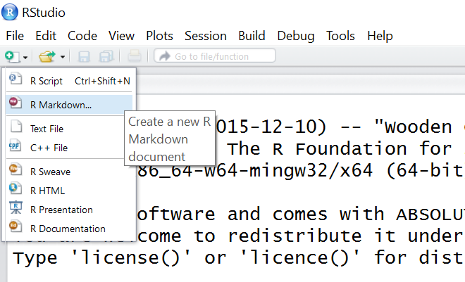
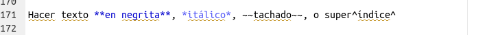

Reportes dinámicos con Rmarkdown
Programación y métodos estadísticos avanzados en R
Universidad de Costa
Universidad de Costa
Marcelo
Araya-Salas, PhD
“2022-09-12”
Rmarkdown
R Markdown se describe aquí como “un formato de autoría que permite crear fácilmente documentos dinámicos, presentaciones e informes desde R”. Usando R Markdown, puedes generar documentos con piezas, o “bloques”, de código R incrustado. Cuando el documento se renderiza, estos bloques se evalúan, y los resultados se anidan en el documento de acuerdo con las convenciones especificadas.
¿Por qué es útil?
Imagínese que le encargan generar un informe sobre la calidad del agua de cada uno de los 10 ríos. Puede:
- Producir figuras y tablas para cada río y luego pegar
individualmente esos elementos en cada documento, *o
- Usar R Markdown para generar 10 documentos con formato idéntico que incluyan cada uno las figuras y tablas correspondientes
Ahora imagine que se encuentra un error en el conjunto de datos, y todas sus figuras necesitan ser actualizadas. En lugar de actualizar y reemplazar cada figura individualmente, R Markdown permite simplemente volver a renderizar sus documentos utilizando el conjunto de datos corregido.
Configuración de un nuevo documento R Markdown (Como con todo lo
relacionado con R), ¡recomiendo encarecidamente el uso de R Studio para crear documentos R Markdown!
Comience seleccionando R Markdown... en el menú desplegable
que aparece al crear un nuevo archivo R:

Nota: Aquí se le pedirá que instale varios paquetes que son necesarios para que R Markdown funcione correctamente.
Aparecerá una ventana que te pedirá que des un nombre y un autor a tu documento markdown, así como que especifiques el formato de salida de tu documento. Seleccione ‘HTML’ porque más tarde nos interesará convertirlo en una página web; puede cambiar sus preferencias de salida de HTML a ‘PDF’ o ‘Word’ en cualquier momento.

Esto le llevará a su primer archivo .Rmd (o R Markdown). Verá que su nuevo archivo markdown ya tiene una plantilla con instrucciones básicas. Como queremos empezar de cero y crear nuestro propio documento, ¡sólo hay que borrar las líneas 8-23!

Si es un usuario habitual de R, estará familiarizado con el uso de
# para denotar el texto que R no evaluará. En los
documentos R Markdown, en lugar de decirle a R lo que no debe
evaluar (usando #), le dices a R lo que sí evalúa
(¡lo haremos un poco más tarde!).
Ejercicio 1
Cree un nuevo archivo R Markdown, escriba algunas líneas de texto, y
haga clic en “Knit HTML” para ver cómo se verá su documento
renderizado.

Formato con sintaxis Markdown
Hay algunas grandes referencias en línea a R Markdown que tienen información sobre la sintaxis general de Markdown, incluyendo esta guía simple, y esta guía más profunda.
Todo este tutorial se ha creado usando R Markdown, así que incluiré capturas de pantalla del documento markdown en bruto para demostrar cómo funciona la sintaxis markdown. (¡Inicio de markdown…!)
####Input: 
####Salida: Crear cabeceras de varios tamaños:
#Cabecera 1 ##Cabecera 2
##Cabecera 3
####Input: 
####Salida: Hacer que el texto sea negrita, cursiva, ~~ tachado~~, o superscript.
####Input: 
####Salida: Añade una imagen:
####Input: 
####Salida: Crear un enlace a Google
##Ejercicio 2 Practica el formato utilizando la sintaxis de markdown configurando los encabezados, poniendo el texto en negrita y cursiva, incrustando una imagen y añadiendo un enlace. Piensa en dónde debe guardarse tu imagen, y/o cómo definir la ruta de acceso a tu imagen para que R la localice e incruste correctamente.
###Embedding Code Para incrustar código R en su documento markdown, necesitará definir un área en la que el código R debe ser evaluado. Esto también se conoce como “chunk”, y se define utilizando:

Notarás que el chunk de R es de un gris más oscuro que los bloques de markdown por encima y por debajo de él. Todo lo que se incluye en el chunk se evalúa y se muestra de acuerdo con las especificaciones que usted puede modificar.
Comencemos creando un marco de datos que queramos analizar:
- sitio: 10 sitios, etiquetados de la a a la j
- visita: 2 visitas por sitio
- hábitat: 5 sitios oceánicos, 5 sitios fluviales
- riqueza: riqueza de especies en cada lugar, por visita
####Input: 
####Output:
mydata<-data.frame(site=rep(letters[1:10],2),
visit=c(rep(1,10), rep(2,10)),
habitat=rep(c(rep("ocean",5),rep("river",5)),2),
richness=round(abs(rnorm(20,5,3)),0))
str(mydata) # Look at the structure of your dataframe## 'data.frame': 20 obs. of 4 variables:
## $ site : chr "a" "b" "c" "d" ...
## $ visit : num 1 1 1 1 1 1 1 1 1 1 ...
## $ habitat : chr "ocean" "ocean" "ocean" "ocean" ...
## $ richness: num 5 6 8 1 10 1 9 2 6 7 ...Cuando su documento se renderiza, el bloque de código se muestra en un cuadro gris, y los resultados de ese código se muestran en un cuadro blanco. ¿Y si sólo quieres que se muestre el resultado de tu código? ¿O que su código se muestre pero no se ejecute? Hay argumentos que puedes añadir a cada uno de tus bloques para especificar estas y otras opciones:
Añade el argumento echo=FALSE.
####Input: 
####Output:
## 'data.frame': 20 obs. of 4 variables:
## $ site : chr "a" "b" "c" "d" ...
## $ visit : num 1 1 1 1 1 1 1 1 1 1 ...
## $ habitat : chr "ocean" "ocean" "ocean" "ocean" ...
## $ richness: num 0 7 0 6 7 4 2 2 4 9 ...Puedes ver que el código está oculto pero se muestran los resultados.
Esta
referencia es una buena guía para ‘opciones de bloque’ como estos:

##Ejercicio 3 Crea un marco de datos, y mira sus primeras filas
(usando la función head()) y su estructura (usando la
función str()). Intenta utilizar los argumentos
eval, include, collapse y
echo cuando configures tu chunk. ¿Cómo influyen en el
documento renderizado?
###Embedding Plots Los gráficos pueden ser fácilmente incrustados en
los documentos markdown simplemente utilizando las funciones de trazado
disponibles en {base}, {ggplot2}, o
{lattice} como lo haría en un típico script de R.
####Input: 
####Output:
## Warning: Duplicated aesthetics after name standardisation: fill
También puede utilizar los argumentos
dpi: define los puntos por pulgadafig.align: alineación de la figura en el documento renderizado, puede serizquierda,derechaocentro.fig.heightyfig.width: definen el tamaño de la figurafig.path: ruta de archivo del directorio donde se debe guardar la figura
###Embedding R Code In-Line Puede que hayas notado a lo largo de este
tutorial que tengo pequeños bloques de texto que parecen
piezas de código. Esto se conoce como incrustación de
código en línea, y en realidad hay un par de maneras diferentes en que
esto puede ser utilizado.
La primera es la más sencilla; simplemente queremos tomar un bloque
de texto y darle la apariencia de un bloque de código. Esto es útil
cuando estamos describiendo las funciones que hemos utilizado, como
str() o cuando nos referimos en el texto a un objeto
particular que existe en nuestro entorno R, como mydata. Es
simplemente una forma de comunicar al lector que el texto debe ser
interpretado en el contexto del código R. Es muy fácil hacer esto; sólo
tienes que añadir ` a cada lado de tu texto, así:
####Input: 
####Salida: El nombre de nuestro marco de datos es
mydata.
La segunda forma en que se utiliza esto es para evaluar el código R en línea, e incrustar los resultados de esa evaluación en el texto del documento renderizado. Por ejemplo, considere la frase “La riqueza media de especies encontrada en el sitio b fue X”. La primera opción es calcular ese valor e introducir manualmente el resultado en la propia frase. ¿Pero qué pasa si el conjunto de datos cambia? Tendrá que volver a calcular ese valor y sustituirlo manualmente. Es mucho más eficiente utilizar código incrustado y evaluado en línea, como este:
####Input: 
####Salida: La riqueza media de especies encontrada en el sitio b fue 4.5.
(Recuerde que los valores de riqueza se generan aleatoriamente cuando se crea el conjunto de datos, por lo que su valor puede ser diferente a éste).
References
Session information
## R version 4.1.0 (2021-05-18)
## Platform: x86_64-pc-linux-gnu (64-bit)
## Running under: Ubuntu 20.04.2 LTS
##
## Matrix products: default
## BLAS: /usr/lib/x86_64-linux-gnu/atlas/libblas.so.3.10.3
## LAPACK: /usr/lib/x86_64-linux-gnu/atlas/liblapack.so.3.10.3
##
## locale:
## [1] LC_CTYPE=pt_BR.UTF-8 LC_NUMERIC=C
## [3] LC_TIME=es_CR.UTF-8 LC_COLLATE=pt_BR.UTF-8
## [5] LC_MONETARY=es_CR.UTF-8 LC_MESSAGES=pt_BR.UTF-8
## [7] LC_PAPER=es_CR.UTF-8 LC_NAME=C
## [9] LC_ADDRESS=C LC_TELEPHONE=C
## [11] LC_MEASUREMENT=es_CR.UTF-8 LC_IDENTIFICATION=C
##
## attached base packages:
## [1] stats graphics grDevices utils datasets methods base
##
## other attached packages:
## [1] viridis_0.6.2 viridisLite_0.4.0 ggplot2_3.3.6 knitr_1.39
## [5] kableExtra_1.3.1
##
## loaded via a namespace (and not attached):
## [1] highr_0.9 pillar_1.8.0 bslib_0.2.5.1 compiler_4.1.0
## [5] jquerylib_0.1.4 tools_4.1.0 digest_0.6.29 gtable_0.3.0
## [9] jsonlite_1.8.0 evaluate_0.15 lifecycle_1.0.1 tibble_3.1.8
## [13] png_0.1-7 pkgconfig_2.0.3 rlang_1.0.4 DBI_1.1.1
## [17] cli_3.3.0 rstudioapi_0.13 yaml_2.3.5 xfun_0.31
## [21] fastmap_1.1.0 gridExtra_2.3 withr_2.5.0 dplyr_1.0.7
## [25] stringr_1.4.0 httr_1.4.2 xml2_1.3.2 generics_0.1.0
## [29] vctrs_0.4.1 sass_0.4.0 tidyselect_1.1.1 webshot_0.5.2
## [33] grid_4.1.0 glue_1.6.2 R6_2.5.1 fansi_1.0.3
## [37] rmarkdown_2.13 farver_2.1.1 purrr_0.3.4 magrittr_2.0.3
## [41] scales_1.2.0 htmltools_0.5.3 assertthat_0.2.1 rvest_1.0.0
## [45] colorspace_2.0-3 labeling_0.4.2 utf8_1.2.2 stringi_1.7.8
## [49] munsell_0.5.0